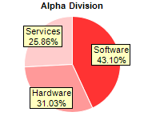
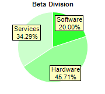
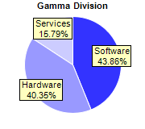

This example demonstrates drawing multiple pies with different data and colors. It also demonstrates putting labels on the sectors and using sector borders.
- The sectors colors are specified using BaseChart.setColors2.
- The sectors all have white borders set using PieChart.setLineColor. The borders around the perimeters are invisible as they are the same color as the background. The sector borders internal to the pies become the separating lines among sectors.
- The sector labels are configured with a pale yellow background and black border. This is by getting the TextBox object representing the sector label prototype using PieChart.setLabelStyle, and then call its Box.setBackground method.
- The sector labels are moved inside the pie by using PieChart.setLabelLayout with a negative label position.
The following is the command line version of the code in "cppdemo/multipie". The MFC version of the code is in "mfcdemo/mfcdemo". The Qt Widgets version of the code is in "qtdemo/qtdemo". The QML/Qt Quick version of the code is in "qmldemo/qmldemo".
#include "chartdir.h"
void createChart(int chartIndex, const char *filename)
{
// The data for the pie chart
double data0[] = {25, 18, 15};
const int data0_size = (int)(sizeof(data0)/sizeof(*data0));
double data1[] = {14, 32, 24};
const int data1_size = (int)(sizeof(data1)/sizeof(*data1));
double data2[] = {25, 23, 9};
const int data2_size = (int)(sizeof(data2)/sizeof(*data2));
// The labels for the pie chart
const char* labels[] = {"Software", "Hardware", "Services"};
const int labels_size = (int)(sizeof(labels)/sizeof(*labels));
// Create a PieChart object of size 180 x 160 pixels
PieChart* c = new PieChart(180, 160);
// Set the center of the pie at (90, 80) and the radius to 60 pixels
c->setPieSize(90, 80, 60);
// Set the border color of the sectors to white (ffffff)
c->setLineColor(0xffffff);
// Set the background color of the sector label to pale yellow (ffffc0) with a black border
// (000000)
c->setLabelStyle()->setBackground(0xffffc0, 0x000000);
// Set the label to be slightly inside the perimeter of the circle
c->setLabelLayout(Chart::CircleLayout, -10);
// Set the title, data and colors according to which pie to draw
if (chartIndex == 0) {
c->addTitle("Alpha Division", "Arial Bold", 8);
c->setData(DoubleArray(data0, data0_size), StringArray(labels, labels_size));
int colors0[] = {0xff3333, 0xff9999, 0xffcccc};
const int colors0_size = (int)(sizeof(colors0)/sizeof(*colors0));
c->setColors(Chart::DataColor, IntArray(colors0, colors0_size));
} else if (chartIndex == 1) {
c->addTitle("Beta Division", "Arial Bold", 8);
c->setData(DoubleArray(data1, data1_size), StringArray(labels, labels_size));
int colors1[] = {0x33ff33, 0x99ff99, 0xccffcc};
const int colors1_size = (int)(sizeof(colors1)/sizeof(*colors1));
c->setColors(Chart::DataColor, IntArray(colors1, colors1_size));
} else {
c->addTitle("Gamma Division", "Arial Bold", 8);
c->setData(DoubleArray(data2, data2_size), StringArray(labels, labels_size));
int colors2[] = {0x3333ff, 0x9999ff, 0xccccff};
const int colors2_size = (int)(sizeof(colors2)/sizeof(*colors2));
c->setColors(Chart::DataColor, IntArray(colors2, colors2_size));
}
// Output the chart
c->makeChart(filename);
//free up resources
delete c;
}
int main(int argc, char *argv[])
{
createChart(0, "multipie0.png");
createChart(1, "multipie1.png");
createChart(2, "multipie2.png");
return 0;
}
© 2023 Advanced Software Engineering Limited. All rights reserved.